Skills
Design + Visualisation
- Revit · AutoCAD · Rhino
- SketchUp · Lumion · V-Ray
- Photoshop · Illustrator · InDesign
- AI-assisted design workflows
Selected architecture / 2018—2026
by Samiha Abeda Nur
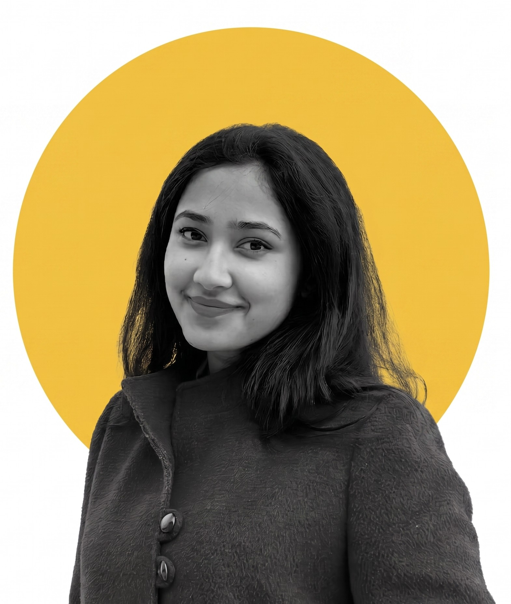
01 / AboutABOUT / SAMIHA ABEDA NUR
I work across architecture, spatial storytelling and visualization, with a growing focus on how artificial intelligence can reshape the way we imagine, communicate and deliver the built environment.
I am pursuing a Master in AI for Architecture & Business Innovation at IAAC, Barcelona, bringing architectural thinking together with emerging technology and new models of design practice.
ABOUT / MORE
I am Samiha Abeda Nur, an architect and creative visualizer interested in the relationship between architecture, technology, storytelling and human experience.
My architectural journey began with a Bachelor of Architecture at the Military Institute of Science and Technology in Dhaka, where I developed a strong interest in spatial design, sustainability and architecture that responds to people and their everyday experiences.
Since then, I have worked across architectural design, visualization and project development. My experience ranges from hospitality and sports architecture to transport infrastructure, retail environments and visual communication. Working on both academic and professional projects has allowed me to explore architecture at different scales and understand how an idea develops from an early concept into a spatial and visual experience.
Visualization has always been an important part of the way I design. I enjoy using drawings, three-dimensional models, material studies and imagery not only to represent a completed proposal, but also as tools for discovering and developing an architectural idea.
I am currently pursuing the Master in AI for Architecture & Business Innovation at IAAC in Barcelona. This marks a new chapter in my work, where I am exploring how artificial intelligence and emerging digital technologies can become meaningful tools within architectural practice.
I am particularly interested in how AI can support design exploration, visualization, decision-making and new ways of working within the built environment. Rather than seeing technology as separate from architecture, I am interested in understanding how it can expand the architect's creative process while keeping human experience at the centre of design.
Through my work, I continue to explore architecture as a combination of space, technology, visual communication and storytelling.
01 / SELECTED WORKS
Academic and professional work spanning inclusive sports, hospitality, high-rise design, transport infrastructure and landscape-led leisure.

Sports institute for differently abled athletes · Dinajpur
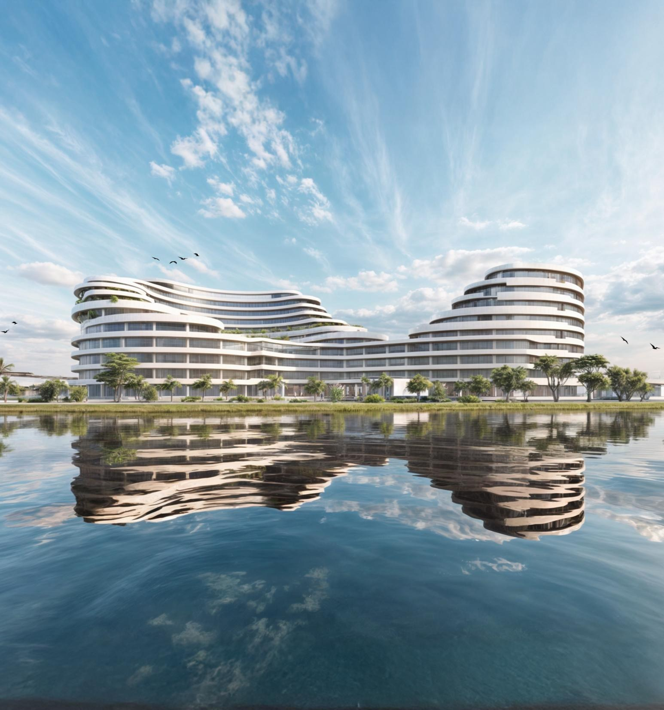
Five-star waterfront hotel · Hatirjheel

43-storey office tower · Mirpur
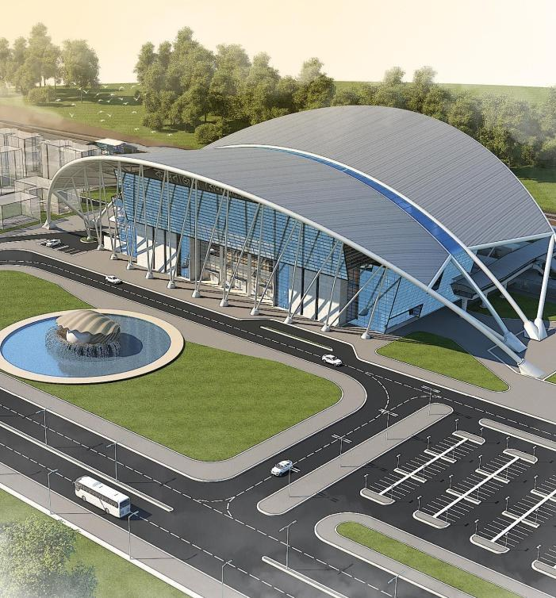
Transport architecture · Bangladesh
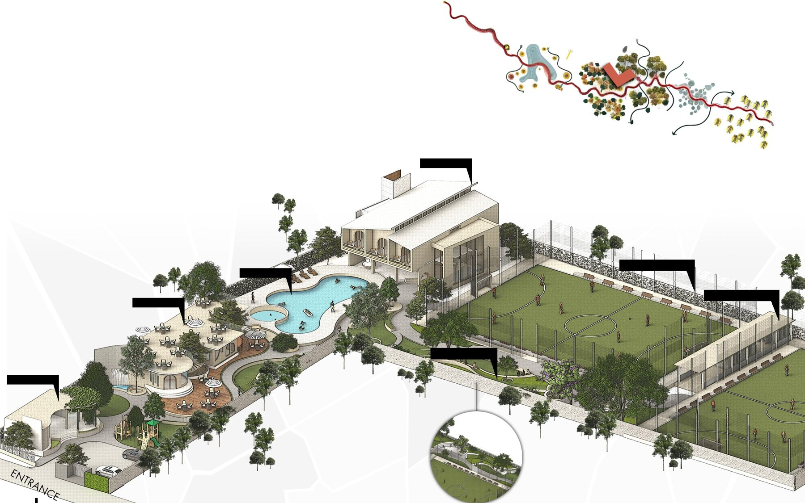
Sports, leisure and hospitality · Savar
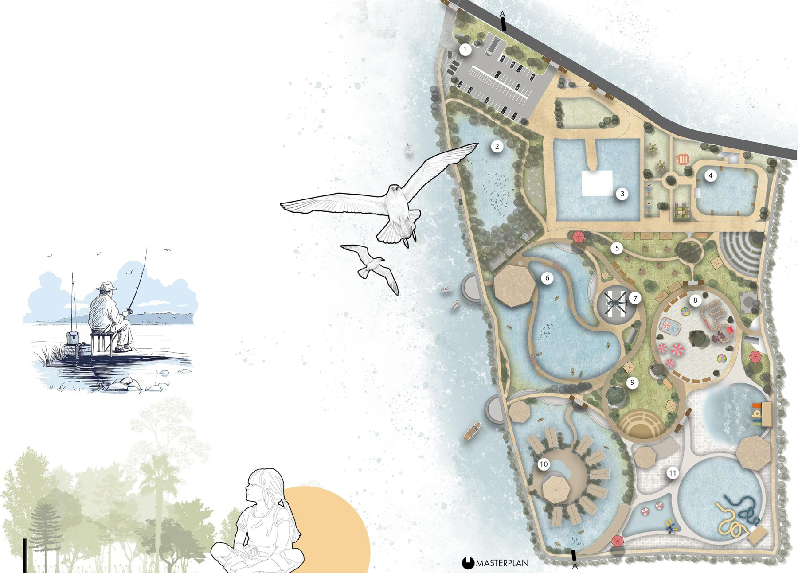
Eco resort and recreation landscape · Khulna
02 / PROFILE
Skills
Education
Experience
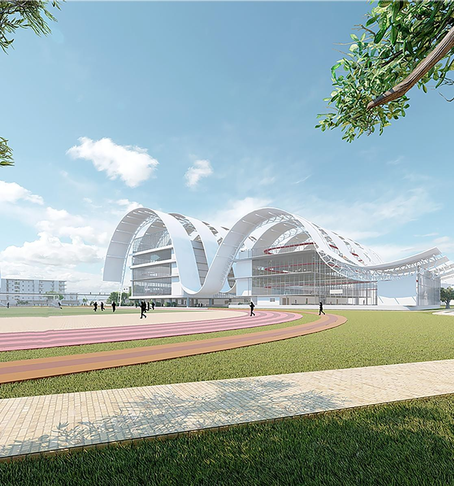
03 / PROJECT 01
Sports Institute for the Differently Abled
A dedicated sports complex designed to create accessible, high-quality environments for differently abled athletes. The design is organized around the relationship between mind, body and spirit.
Scroll to enter the plan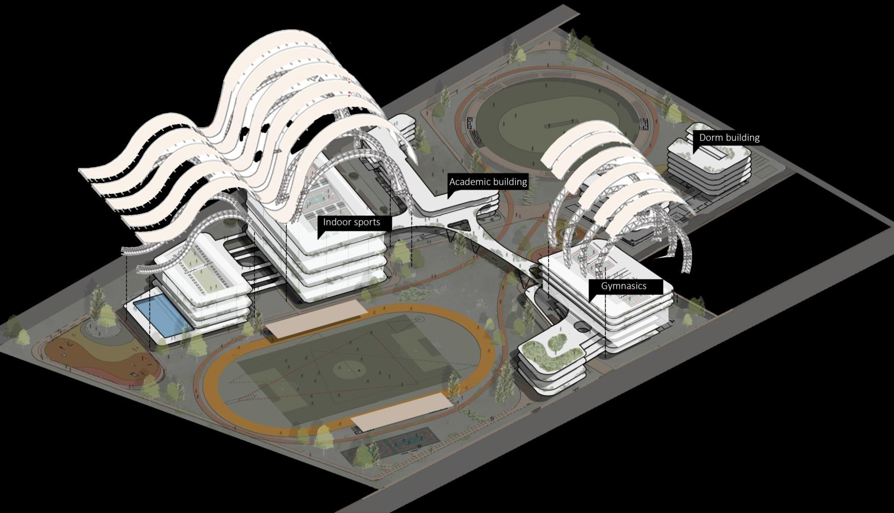
DESIGN LANGUAGE
The scheme combines training, competition, accommodation and social spaces through a connected campus. Large-span structures, open circulation and clear zoning support movement while giving the complex a strong public identity.
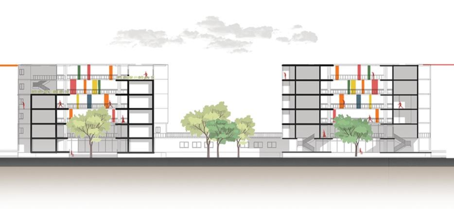

04 / PROJECT 02
Five-Star Waterfront Hotel
Inspired by the spatial experience of a cruise, the hotel uses fluid massing to maximize views toward the water while creating a continuous sequence of luxurious public and private spaces.
Scroll to enter the plan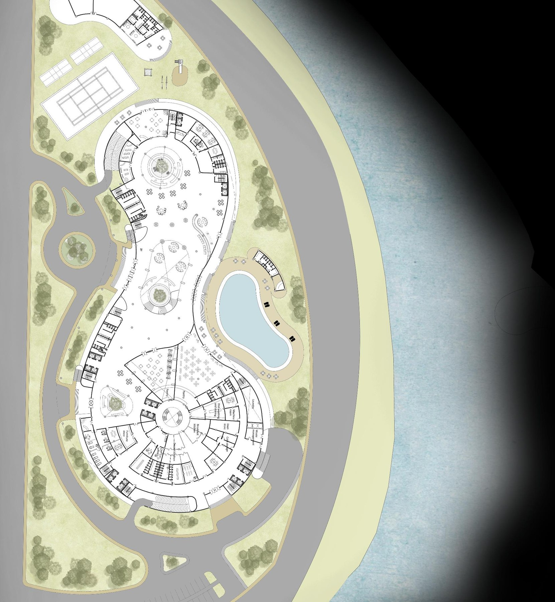
DESIGN LANGUAGE
Curved volumes and stepped levels orient rooms toward the waterfront. The project balances arrival, recreation, hospitality and premium accommodation with a strong visual relationship to the site.
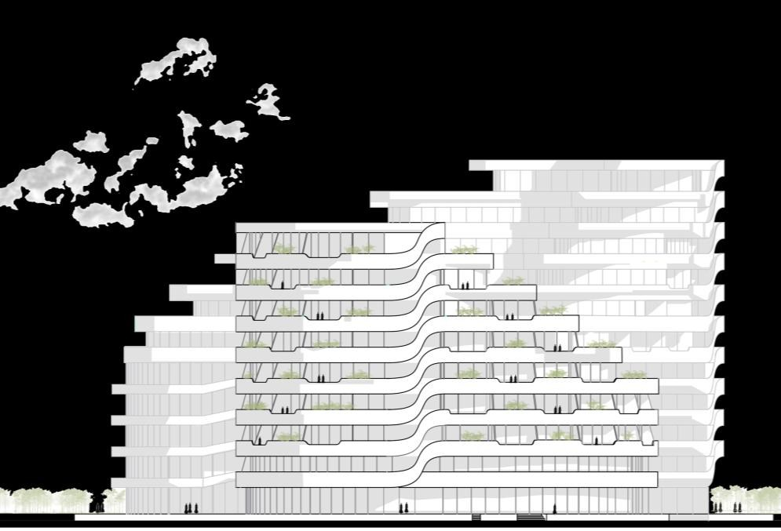
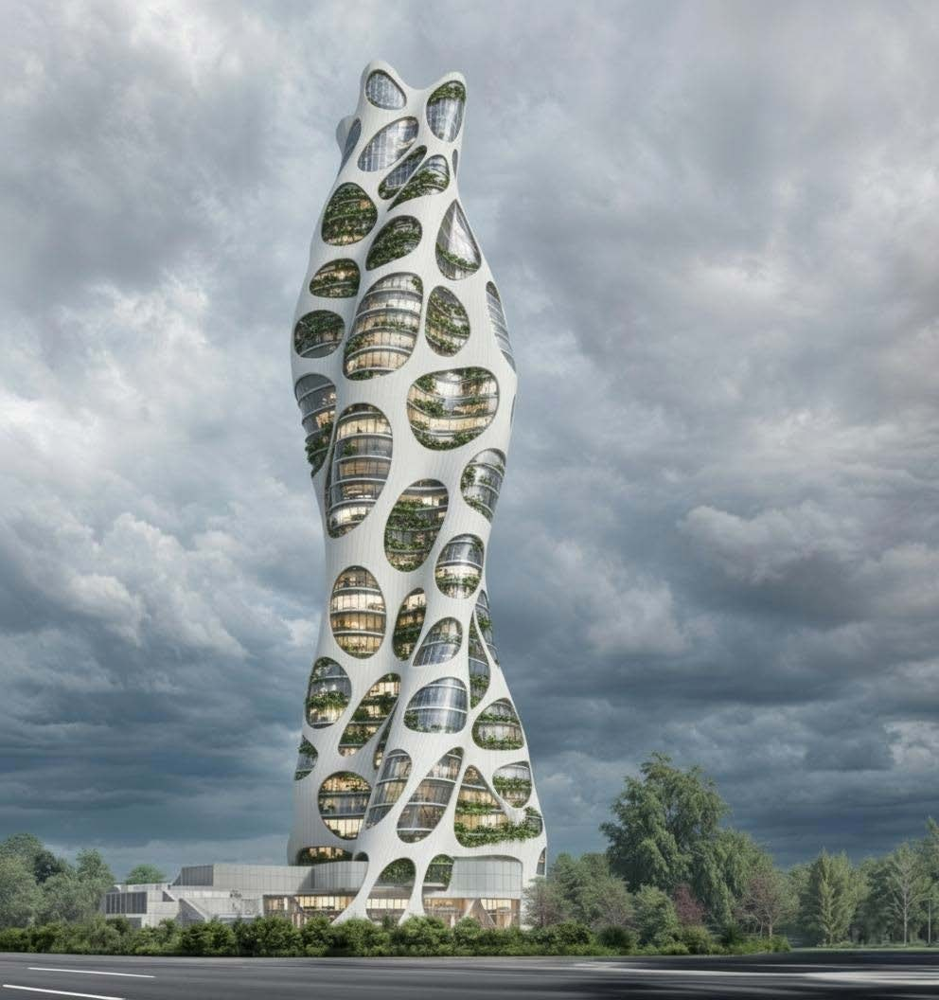
05 / PROJECT 03
43-Storey Office Tower
A high-rise office tower where structure and skin become one expressive exoskeleton. The outer shell carries lateral forces and releases the interior for more efficient, column-free office space.
Scroll to enter the plan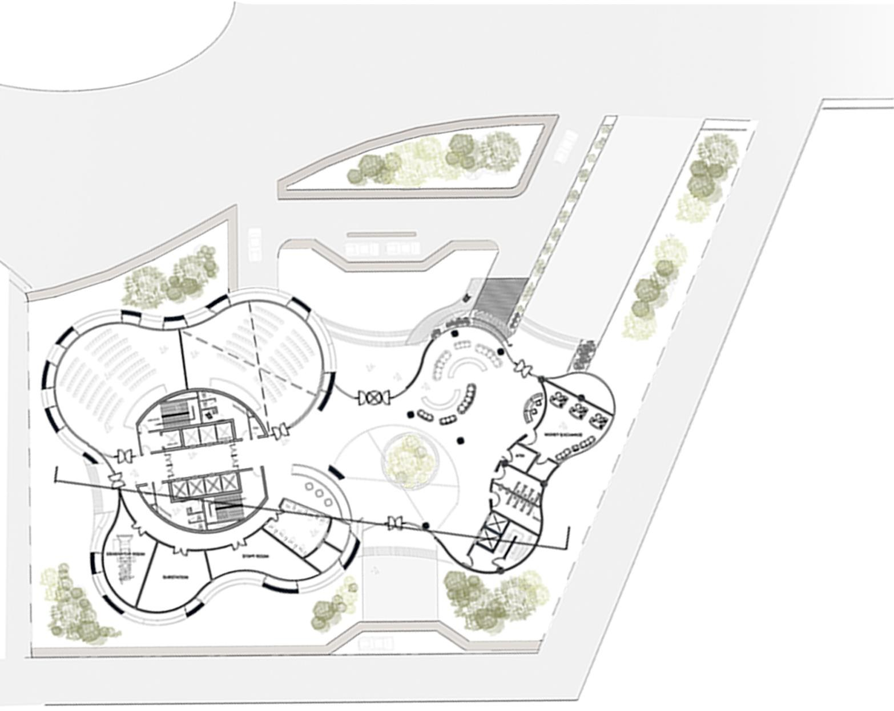
DESIGN LANGUAGE
The biomimetic exterior creates a recognizable silhouette while opening selected areas for daylight, greenery and views. The structural logic becomes part of the architectural expression rather than a hidden system.
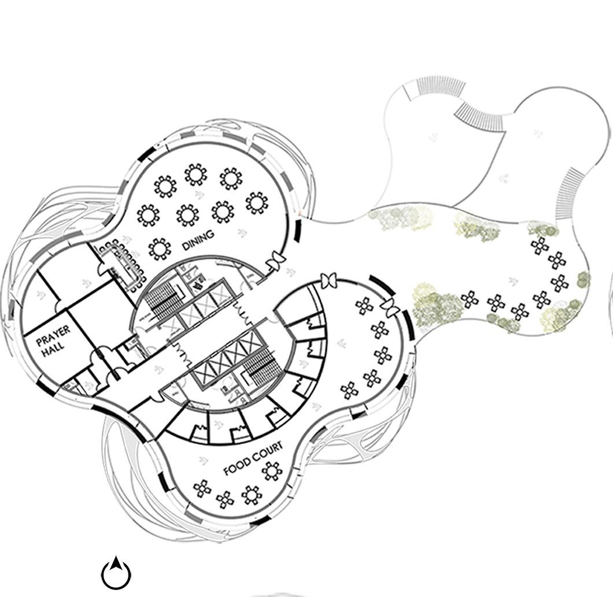